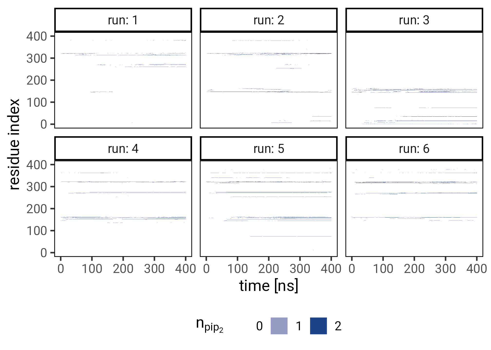
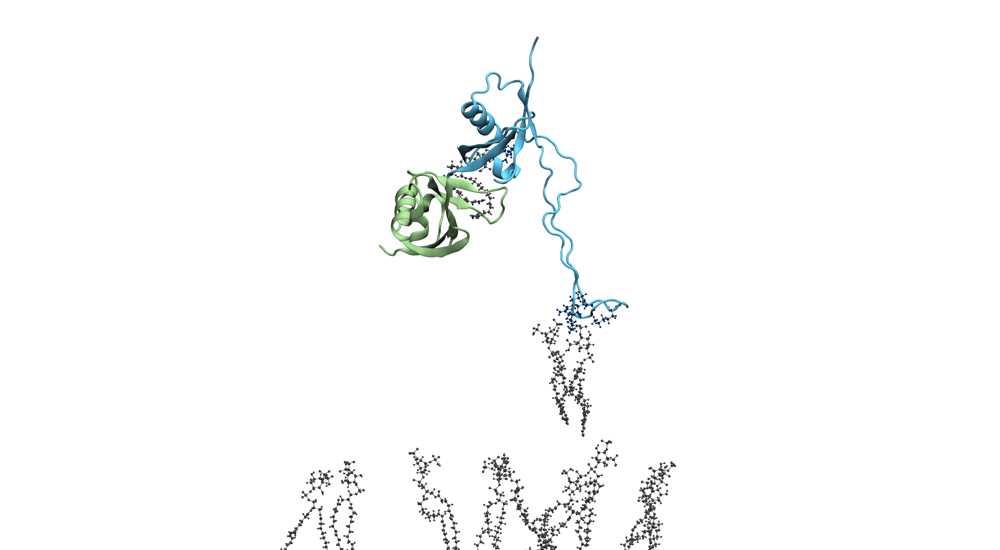

Intrinsically disordered region of Talin’s FERM domain functions as an initial PIP2 recognition site
![]()
Focal adhesions (FAs) mediate the interaction of the cytoskeleton with the extracellular matrix (ECM) in a highly dynamic fashion. Talin is a central regulator, adaptor protein and mechano-sensor of focal adhesion complexes. For recruitment and firm attachment at FAs, Talin’s N-terminal FERM domain binds to phosphatidylinositol 4,5-bisphosphate (PIP2)-enriched membranes. A newly published autoinhibitory structure of Talin-1, where the known PIP2 interaction sites are covered up, lead us to hypothesize that a hitherto less examined loop insertion of the FERM domain acts as an additional and initial site of contact. We evaluated direct interactions of Talin-1 with a PIP2 membrane by means of atomistic molecular dynamics (MD) simulations. We show that this unstructured, 33-residue-long loop strongly interacts with PIP2 and can facilitate further membrane contacts, including the canonical PIP2 interactions, by serving as a flexible membrane anchor. Under force as present at FAs, the extensible FERM loop ensures Talin to maintain membrane contacts when pulled away from the membrane by up to 7 nm. We identify key basic residues of the anchor mediating the highly dynamic Talin-membrane interaction. Our results put forward an intrinsically disordered loop as a key and highly adaptable PIP2 recognition site of Talin and potentially other PIP2-binding mechano-proteins.
Introduction
This is a draft and as such subject to change. The source repository for this manuscript lives at https://github.com/hits-mbm-dev/paper-talin-loop. The manuscript and poster are available in multiple formats:
- manuscript web/html: https://hits-mbm-dev.github.io/paper-talin-loop/
- manuscript print/pdf: https://hits-mbm-dev.github.io/paper-talin-loop/index.pdf
- poster web/html: https://hits-mbm-dev.github.io/paper-talin-loop/poster.html
- poster print/pdf: https://hits-mbm-dev.github.io/paper-talin-loop/poster.pdf
Cells critically sense the mechanics of their environment at cell adhesion sites for a multitude of biological processes. Contact with the extracellular matrix and surrounding cells regulates growth, differentiation, motility and even apoptosis (1–4). The multiprotein focal adhesion complex is responsible for translating between and integrating biochemical and mechanical signals for both outside–in and inside–out activation(5, 6).
At the center of the focal adhesion complex sits the adaptor protein Talin, which dynamically unfolds and refolds under force (7). A schematic of Talin can be seen in Figure 1 (a). Through interaction with integrin tails (dark green) (8), which in turn interact with collagen fibers via their heads, it links the extracellular matrix to the intracellular cytoskeleton by directly interacting with actin. Talin also features specific interactions with the membrane. Their formation, mechanical stability and role in mechanosensing remain to be fully resolved.
Talin contains an N-terminal FERM domain (F for 4.1 protein, E for ezrin, R for radixin and M for moesin), which is composed of the subdomains F0 to F3 and provides a link to the cytosolic side of the plasma membrane (9). It does so via a conserved binding motif for phosphatidylinositol 4,5-bisphosphate (PIP2), which is enriched at active focal adhesion sites (10–12). The main PIP2 binding sites are located in F2 and F3 (highlighted as red spheres in Figure 1 (a)).
Two isoforms exist of Talin, Talin-1 and Talin-2, encoded by the tln1 and tln2 genes. This work refers to Talin-1 if not otherwise stated. Notably, the Talin-1 FERM domain differs from other FERM proteins through the addition of the F0 subdomain, which is connected to F1 via a charged interface, as well as an insertion in F1, a flexible loop with helical propensity and basic residues (13). Additionally, Talin’s FERM domain exists in an extended conformation, as opposed to the cloverleaf-like conformation of other FERM proteins (14). F3 also has a binding site for \beta-integrin tails (15) and is partly responsible for the enrichment of PIP2 at the membrane through a binding site for PIPKI\gamma (16). A second integrin binding site is located in the rod domain 11 (R11) (17). Talin interacts with the cytoskeleton through actin binding sites (F2-F3, R4-R8, R13-DH) (18). The review by Klapholz et al. (19) provides an excellent overview of the many interaction sites of Talin and their central role in the focal adhesion complex.
The mechanistic role of the disordered loop in the F1 domain in the many aspects of Talin function remains elusive. Its overall positive charge renders it a prime candidate as a PIP2 binding site. However, previous studies only identified a minor role of the loop in PIP2 binding compared to F2-F3 (20, 21). On the other hand, the F1 loop has been shown to contribute to Talin-mediated integrin activation (13).
It was previously shown that F3 can interact with R9, which impedes integrin activation (22). Furthermore, in a recently determined cryo-electron microscopy structure of autoinhibited Talin-1, Dedden et al. (23) showed that the rod domains R9 and R12 shield the established PIP2 binding surface and the integrin binding site in F3 (see Figure 1 (b), Figure 1 (c)). This beckons the question how this autoinhibition can be resolved. Song at al. (12) previously investigated a fragment of Talin consisting of F2-F3 and an inhibiting rod segment and suggested a pull-push mechanism, whereby negatively charged PIP2 attracts its positively charged binding surface on F2-F3 and simultaneously repels the negatively charged surface of the inhibitory rod segment. However, this still leaves open the question of how Talin can establish a first contact with the membrane and remain within a sufficient proximity for this effect to kick in.


We hypothesized that the flexible F1 loop inserted into Talin’s FERM domain serves as an additional PIP2 interaction site. As such it would be readily accessible to PIP2 even in Talin’s autoinhibited conformation and would further mechanically stabilize Talin’s interaction with the membrane. To test this hypothesis, we modelled the loop, which, due to its high flexibility, is not included in crystal structures of the FERM domain, such as PDB-ID 3IVF by Elliot et al. (14).
With a complete structure of the Talin FERM domain, we investigated the role of the F1 loop through atomistic molecular dynamics (MD) simulations, which had previously also proven useful to detect the recognition of PIP2 in membranes by PH domains (24) or the FERM domain of Focal Adhesion Kinase (25).
In F0F1 simulations, we found the loop to have a clear propensity to interact with the PIP2-containing membrane. It is able to establish a first contact with the membrane even from unfavorable initial orientations due to its large search volume. Furthermore, we show with simulations of the full-length FERM domain that once the loop has established an initial contact, it can anchor the FERM domain to the membrane and allow the known major binding sites in F2-F3 to form.
These results provide mechanistic insight Talin–PIP2 interactions and highlight the role of secondary intrinsically disordered binding surfaces for membrane recognition.
Materials and Methods
Molecular dynamics with GROMACS
MD simulations were performed with GROMACS (26, 27) version 2020.03 (28). A crystal structure of the Talin FERM domain by Elliot et al. (14) with the PDB-ID 3IVF was used as the basis of all simulations.
The deleted or missing residues (134-172) belonging to the F1 domain loop were modeled using MODELLER (29, 30) via the interface to Chimera (31), followed by equilibration with GROMACS. The resulting conformation was compared to an NMR structure of the F1 domain (PDB-ID 2KC2) by Goult et al. (13). The missing residue M1 was also added. The missing residues D125 and E126 as well as I399 and L400 were not modelled, as they are far from the region of interest (the F1-loop) This leaves us with a sequence from residue 1 to 398 with a shift by 2 in numbering compared to the canonical TLN1_MOUSE Talin-1 sequence (uniprot ID P26039) after residue 124. Simulations were performed with the CHARMM36 force field. Topologies, including the membrane, were generated with the CHARMM-GUI web app (32–34) and GROMACS tools. All simulations used the TIP3P water model and were neutralized with 0.15 mol/L of NaCl. A 6-step equilibration was performed after gradient descent energy minimization while gradually relieving restraints on protein and membrane atoms. This followed the standard procedure recommended by CHARMM-GUI. The exact Molecular Dynamics Parameter (mdp) files are provided in the data (https://doi.org/10.11588/data/BQTQUN) in the assets folder of each simulation system. Production runs used a timestep of 2 fs, a Verlet cut-off scheme for Van-der-Waals interactions and the Particle Mesh Ewald (PME) method for long-range electrostatics. NPT-ensembles were achieved by Nosé-Hoover temperature coupling (35, 36) and Parinello-Rahman pressure coupling (37). An example .mdp-file can be found in the Supplementary Materials.
The initial equilibrium simulation of the completed FERM domain was run for 75 ns. Subsequently, the root mean squared fluctuation (RMSF) was calculated with GROMACS tools (see Supplementary Material Figure 7 (a)).
The F0F1 FERM sub domains (residues 1 to 197) were simulated to evaluate protein-membrane association using a rotational sampling approach. This entailed placing the protein 1.5 nm away from a 1-palmitoyl-2-oleoyl-glycero-3-phosphocholine (POPC) membrane, where 12 of the 119 lipids in the upper leaflet were replaced with PIP2. This results in a physiological concentration of 10% PIP2. The PIP2 molecules used in the simulutions have a charge of -4, consisten with the deprotonation state of the phosphate groups at physiological pH (38).
60 different starting orientations of the protein where generate, spanning a rotation of 360 degrees. The protein was rotated in such a way that the respective closest residue had the same distance to the membrane for the 0° and the 180° starting positions. 6 replicates of each orientation were run for 200 ns each. However, due to a hardware failure, 2 of these 360 runs are corrupted and thus excluded from the analysis.
From this rotational sampling, we selected representative conformations with loop-membrane interactions as the basis of 6 equilibrium simulations of the complete FERM domain over a POPC membrane with 26 PIP2 lipids out of a total of 273 lipids in the upper leaflet. Each simulation ran for 400 ns. The initial conformations for perpendicular pulling simulations of the F0F1 subdomains to gauge interaction strength were also chose from the rotational sampling set. The pulling simulations used an umbrella potential applied to the C-terminus with a harmonic force constant of 500 kJ/mol/nm2 and a constant speed of 0.03 m/s (See Supplementary Data in f0f1-vert-pulling/pull_00003.mdp)
Distance information was extracted from trajectories with gromacs tools interfaced via CONAN (39).
Automation, Data Analysis and Availability
Setup scripts written in bash are available for all simulations shown in this work. Computations for data analysis were tracked with the targets R package (40). Plots were generated with ggplot2 (41). Interactive structure representations are embedded using Mol* (42). Schematic visualizations were rendered with blender (43) and VMD (44). Files relevant to this work that are too big to be uploaded to this repository, such as trajectories and blender files, will be uploaded to a separate location. This manuscript was generated with quarto (45–47).
The plotting code and computational graph of targets is available in this document.
Results
The F1 loop can act as a point of first contact
The high flexibility of the F1 loop gave use the confidence to model it from sequence. It retained its flexibility in equilibrium simulations (Figure 7 (a)), which in combination with comparisons to NMR structures (13) confirmed this approach (see Supplementary Material Figure 7 (a)). The resulting system that provides the basis for our simulations can be explored interactively in the Supplementary Materials.
When simulating only F0F1 over a POPC membrane containing 10% PIP2, we noticed that the F1 loop had a clear propensity to establish contact with the membrane. Once the contact had been established, the protein was anchored strongly enough for more contacts to evolve with time, pulling the protein onto the membrane (Figure 2 (a)). In order to control for a potential bias towards the loop as a result of the starting position, we performed a rotational sampling of the system, where the starting angle of the loop with respect to the membrane was varied across 60 equally spaced angles. Figure 2 (b) shows that independent of the starting position, the loop is able to find the membrane and bind to it. This is due to the large search space it can cover with its high flexibility (see Figure 7 (a)). Binding happens earlier in the simulation when the loop starts oriented favorably towards the membrane (Figure 3 (a), 0 °). While Figure 2 (a) shows one example of a bound conformation, a conformation for each starting angle can be seen in the Supplementary Material Section 9.1.

Once a contact has been made, it becomes exceedingly unlikely for F0F1 to dissociate from the membrane (Figure 3 (b)). Out of 358 runs1, 89 runs never made contact with the membrane, but out of the 269 that did, only 10 eventually dissociated. Thus, the simulated timeframe of 200 ns per trajectory allowed for the observation of some reversibility of FERM–PIP2 binding, albeit only for weakly bound cases and at a small rate of 3.7%. Dissociation from the membrane never occurred on the simulated time scale after more than 3 residues had already made contact.


Figure 4 highlights the residues involved in the interaction of F0F1 with PIP2. The ensemble of final bound conformations from the simulations can be seen in the Supplementary Material in Section 9.1. We observe a number of prominent lysines and arginines, both positively charged residues, across the whole F0F1 fragment to compensate for the negative charge on PIP2. The loop region, highlighted with a grey backdrop in Figure 4 (a), is particularly dense in positively charged residues, albeit the number of PIP2 contacts per basic residue is only marginally higher in this region than elsewhere. Arginines and lysines in regions outside of the disordered loop complement the binding once initial contacts have been established with the loop, and further strengthen the interaction. F0 at the N-terminus (left) is quite flexible as well (see Figure 7 (a)) and can thus reasonably contribute towards membrane binding. The C-terminus of the F1 domain, instead, harbors the interface towards the F2 domain and the two PIP2-interacting residues identified here will be more occluded in vivo. Indeed, simulations of the full-length FERM domain in the later part of this work do not show these interactions anymore (Figure 6 (a)).

The F1 loop maintains and further facilitates formation of FERM–PIP2 interactions
To examine the strength of the PIP2 interactions and the role of the F1 loop in maintaining it, we pulled F0F1 vertically off the membrane in additional force-probe MD simulations (Figure 5). An exemplary render of one of the simulations can be seen in Figure 5 (a). Pulling F0F1 off the membrane requires peak forces of 100–120 pN, during which the interacting residues only very gradually loose contact (Figure 5), as the high flexibility of F1-loop allows the residues to remain in contact even as the distance increases up to a delta of 7 nm. Replicate 4 stands out as the highest curve (dashed lines), as in this run the interactions were so strong that a total of 3 molecules of PIP2 were pulled out of the membrane (1 by F0 and 2 by the F1 loop). A snapshot of this can be seen in Figure 7 (e). This highlights the strong anchoring capabilities of the F1 loop.
As seen in Figure 5 (c), during pulling residues not belonging to the F1 loop loose contact first, while the loop stays attached. The F1 loop works in conjunction with the F0 subdomain (see Figure 7 (d)). Their high flexibility allows them to remain in contact with the membrane over large distances, which would allow for a spring-like re-establishing of more contacts should the force be alleviated. In two cases the last interacting residue was part of the F1 loop, while in three cases the N-terminus of the F0 domain stayed attached for longest.


Having established the prominent role of the F1-loop in positioning F0F1 at the membrane and establishing PIP2 contacts, we next examined this role in the larger context of the full FERM domain. 6 independent simulations were initiated with the full-length FERM domain oriented in such that the tip of the F1-loop was in contact with at least one molecule of PIP2 with varying local environments (see Section 9.1 for one example). These simulations highlight the prominent role of the F1-loop in membrane interactions, now in the context of the full-length FERM domain (Figure 6 (a), compare to Figure 4 (a)). They also reproduce the canonical PIP2 contacts in F2 and F3 known from previous studies, validating our MD simulations. The highlighted residues include K272 of F2 and K316, K324, E342, and K343 of F3, which have been shown to be crucial for the membrane interaction of Talin and subsequent integrin activation by Chinthalapudi et al. (20). Importantly, the loop shows a very dense cluster of PIP2 interactions, with interaction scores (\bar n_{PIP_2}) very similar to these previously known PIP2-interacting residues. The interacting conformations can be seen in context in the Supplementary Material Section 9.1. The F1 loop thus complements these known binding sites with an additional specific binding site, again comprising primarily lysines.


Discussion and Outlook
Using atomistic MD simulations, we provide mechanistic insight into the membrane recognition dynamics of Talin. Our simulations propose a new mode of interaction that helps to explain how Talin can bind the membrane even when its main PIP2 (and integrin) binding sites in F2 and F3 (20) (see figure Figure 6 (b) ) are blocked by autoinhibition (23). Specifically, we find the unique unstructured, 33-residue-long insertion into the F1 domain, the F1 loop, to provide a strong interaction anchor to PIP2-containing membranes.
Overall, the FERM–membrane interaction mode is not characterized by singular binding sites interacting with one molecule of PIP2 each, as would be the conclusion from crystallographic data alone. Rather the cumulative diffuse interaction of multiple PIP2 with multiple residues is what keeps the protein anchored to the membrane. This is particularly evident in the interaction with the flexible F1 loop, but also in the F0 domain. While crystal structures of proteins in complex with PIP2 typically show a one-to-one ratio of lipid per binding site (20, 48, 49), possibly due to the nature of the experimental method, our simulations suggest multiple PIP2 molecules binding simultaneously. Similar results have been observed for Pleckstrin Homology (PH) domain proteins by Naughton et al. (50). According to their study, this simultaneous binding of multiple PIP2 molecules contributes to the high affinity of the membrane interaction.
Our MD simulations suggest that the F1 loop can find favorable interactions with PIP2 across large distances and in a large search volume. We find this to be the disordered loop’s high flexiblity. The F1 loop can maintain the membrane contacts when Talin is pulled off of the membrane over distances as large as 7 nm. A similar mechanism has also been shown by Shoemaker et al. (51) and was fittingly coined “fly-casting”. In the aforementioned publication they focus on the interaction of unfolded regions with DNA. Our simulations now provide an example for the concept applied to protein-lipid interactions. It is well worth noting that, although we mention the greater search space of the F1 loop as its advantage in recognizing PIP2, it has also been argued that the kinetic advantage of the fly-casting mechanism comes mainly from the reduction in free energy as the disordered region folds around the interaction target (52). This can also be argued here, as the loop can flexibly adapt its conformation to the membrane and the dynamic distribution of PIP2 lipids therein. As such it can bind in a multivalent fashion, with several basic residues binding to several PIP2 lipids.
Fast binding kinetics are crucial for Talin’s function at focal adhesion sites. As the PIP2 concentrations increases at the active focal adhesion site, Talin’s FERM F1 loop can perform rapid recognition. The flexibility of the loop also allows it to anchor the protein at the membrane even when being stretched under force (up to a delta of 7 nm, as seen in Figure 5). This is akin to the elastic response seen in focal adhesion kinase (FAK) under force, in which a 49-residue-long linker allows for buffering of the force (53). Here, Talin’s F1 loop can extend and thereby maintain the interactions, which could help rapid rebinding when the force is relieved.
In our force probe simulations, we pulled F0F1 orthogonally off the membrane. This allowed us to assess the full extension and force resistance of the loop. In vivo, however, Talin’s FERM domain is subjected to forces acting at a 30° angle. This might imply an additional function for the FERM domain. As it is dragged along the membrane, the diffuse interactions of the F1 loop and main interaction sites in F2-F3 with PIP2 would increase lateral friction along the membrane as the PIP2 concentration increases. This could further localize Talin at active focal adhesion sites even in the presence of forces acting parallel to the membrane.
We conclusively show that the F1 loop is able to interact with the membrane even from most unfavorable orientations. We propose that Talin mutants lacking the loop, or specifically the basic residues in said loop, will show reduced or at least slowed-down focal adhesion maturation, increased lateral diffusion of Talin under force, and faster focal adhesion disassembly.
Recognition is only the first step. The mechanistic details of how Talin’s autoinhibition is resolved remain to be shown by larger simulations including the inhibiting rod segment. These larger-scale simulations might then be able to provide evidence for the push–pull mechanism proposed by Song et al. (12) or might reveal how the early F1-loop mediated membrane interactions identified in this study might effect the subsequent steps for Talin activation. In conclusion, we propose positively charged, intrinsically disordered regions in Talin’s FERM domain and potentially other PIP2-binding domains to promote recognition and to help maintain the membrane interaction under force.
Declaration of Interests
The authors declare no competing interests.
Acknowledgments
This work was supported by the Klaus Tschira Foundation and the European Research Council (ERC) under the European Union’s Horizon 2020 research and innovation programme (grant agreement No. 101002812).
References
Supplementary Material
Simulation Systems and Structures
NMR Ensemble of F1: 2KC2 (13)
Ensemble of last frames of the F0F1 Rotational Sampling
Ensemble of last frames of the FERM simulations
FERM domain over a POPC/PIP2 membrane
Scripts
Data analysis code is available at https://hits-mbm-dev.github.io/paper-talin-loop/_analysis.html and in the repository at https://github.com/hits-mbm-dev/paper-talin-loop.
Input files and raw data
Input files and raw data are available on heiData here: https://doi.org/10.11588/data/BQTQUN
Supplementary Plots and Tables






| residue | mean_n_pip |
|---|---|
| M 1 | 0.118 |
| K 15 | 0.114 |
| R 30 | 0.104 |
| R 35 | 0.155 |
| K 98 | 0.101 |
| R 118 | 0.127 |
| R 144 | 0.179 |
| K 147 | 0.155 |
| R 151 | 0.209 |
| K 154 | 0.144 |
| K 155 | 0.152 |
| K 158 | 0.154 |
| K 160 | 0.139 |
| K 162 | 0.107 |
| R 193 | 0.120 |
| residue | mean_n_pip |
|---|---|
| M 1 | 0.144 |
| K 15 | 0.154 |
| T 16 | 0.134 |
| R 35 | 0.202 |
| R 74 | 0.195 |
| R 144 | 0.555 |
| K 145 | 0.199 |
| K 147 | 0.426 |
| R 151 | 0.295 |
| K 154 | 0.149 |
| K 155 | 0.391 |
| K 158 | 0.506 |
| K 160 | 0.679 |
| K 162 | 0.174 |
| K 254 | 0.157 |
| K 270 | 0.242 |
| K 272 | 0.412 |
| R 275 | 0.416 |
| K 314 | 0.281 |
| K 316 | 0.310 |
| K 320 | 0.742 |
| N 321 | 0.298 |
| K 322 | 0.507 |
| K 341 | 0.248 |
| K 362 | 0.447 |
Molecular dynamics Parameters
Production runs
integrator = md
dt = 0.002
nsteps = 100000000
cutoff-scheme = Verlet
nstlist = 20
rlist = 1.2
coulombtype = pme
rcoulomb = 1.2
vdwtype = Cut-off
vdw-modifier = Force-switch
rvdw_switch = 1.0
rvdw = 1.2
tcoupl = Nose-Hoover
tc_grps = SYSTEM
tau_t = 1.0
ref_t = 303.15
pcoupl = Parrinello-Rahman
pcoupltype = semiisotropic
tau_p = 5.0
compressibility = 4.5e-5 4.5e-5
ref_p = 1.0 1.0
constraints = h-bonds
constraint_algorithm = LINCS
continuation = yes
nstcomm = 100
comm_mode = linear
comm_grps = SYSTEM
refcoord_scaling = comFootnotes
6 replicas each for 60 angles minus 2 runs lost to a storage failure↩︎
Reuse
Citation
@misc{buhr2023,
author = {Jannik Buhr and Florian Franz and Frauke Gräter},
title = {Intrinsically Disordered Region of {Talin’s} {FERM} Domain
Functions as an Initial {PIP\textasciitilde2\textasciitilde{}}
Recognition Site},
date = {23-01-24},
langid = {en},
abstract = {Focal adhesions (FAs) mediate the interaction of the
cytoskeleton with the extracellular matrix (ECM) in a highly dynamic
fashion. Talin is a central regulator, adaptor protein and
mechano-sensor of focal adhesion complexes. For recruitment and firm
attachment at FAs, Talin’s N-terminal FERM domain binds to
phosphatidylinositol 4,5-bisphosphate
(PIP\textasciitilde2\textasciitilde)-enriched membranes. A newly
published autoinhibitory structure of Talin-1, where the known
PIP\textasciitilde2\textasciitilde{} interaction sites are covered
up, lead us to hypothesize that a hitherto less examined loop
insertion of the FERM domain acts as an additional and initial site
of contact. We evaluated direct interactions of Talin-1 with a
PIP\textasciitilde2\textasciitilde{} membrane by means of atomistic
molecular dynamics (MD) simulations. We show that this unstructured,
33-residue-long loop strongly interacts with
PIP\textasciitilde2\textasciitilde{} and can facilitate further
membrane contacts, including the canonical
PIP\textasciitilde2\textasciitilde{} interactions, by serving as a
flexible membrane anchor. Under force as present at FAs, the
extensible FERM loop ensures Talin to maintain membrane contacts
when pulled away from the membrane by up to 7\textbackslash{} nm. We
identify key basic residues of the anchor mediating the highly
dynamic Talin-membrane interaction. Our results put forward an
intrinsically disordered loop as a key and highly adaptable
PIP\textasciitilde2\textasciitilde{} recognition site of Talin and
potentially other PIP\textasciitilde2\textasciitilde-binding
mechano-proteins.}
}